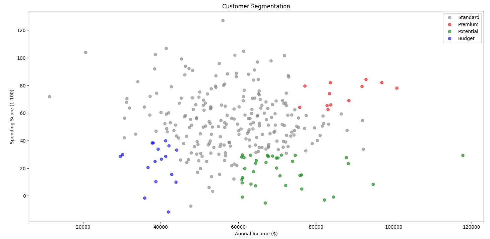

Customer segmentation involves dividing a company's customers into groups that reflect similarity among customers in each group. Machine learning algorithms can analyze purchasing behaviors, demographic data, and customer interactions to identify distinct customer segments. This helps companies tailor marketing strategies and improve customer satisfaction.
Predictive maintenance uses machine learning to predict when equipment failure might occur, allowing for timely maintenance. By analyzing data from sensors and historical maintenance records, companies can prevent unexpected downtime, reduce maintenance costs, and improve operational efficiency.
Sentiment analysis involves analyzing customer reviews, social media posts, and other text data to understand customer opinions and emotions. Machine learning algorithms can classify text as positive, negative, or neutral, helping companies to gauge customer satisfaction and improve their products or services accordingly.
Examples:
Sales forecasting uses machine learning to predict future sales based on historical sales data, market trends, and other relevant factors. Accurate sales forecasts help companies manage inventory, allocate resources efficiently, and set realistic sales targets.
Churn prediction models identify customers who are likely to stop using a company's product or service. By analyzing usage patterns, customer interactions, and demographic data, machine learning algorithms can predict churn and enable companies to take proactive measures to retain customers.
Fraud detection uses machine learning to identify fraudulent activities by analyzing transaction data, user behavior, and other relevant information. Machine learning models can detect anomalies and patterns indicative of fraud, helping companies to prevent financial losses and protect their customers.